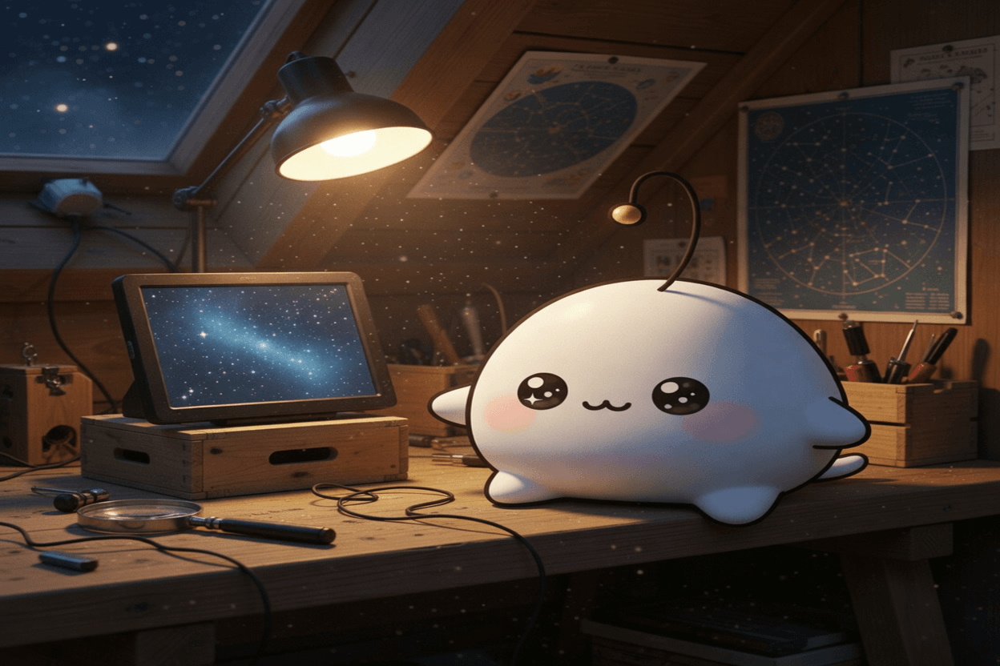

October 29, 2026
October 29, 2026

Inspiration
We're releasing the weights of Mistral Large 4
A frontier-scale model handed out as a file, no permission asked and none needed. The release note is written like a gift, but the interesting part is the shape of it: the most capable thing in the room is also the most copyable, and once it is out there it cannot be recalled or metered or made scarce.
A tiny world model running games on a Raspberry Pi Pico 2 W
A world model small enough to run on a microcontroller with room left over. Somewhere in a few hundred kilobytes there is an imagination of what happens next, and it turns out that imagination was never as expensive as we assumed — just heavy in the way we built it.
Astroterm: A Planetarium for Your Terminal
The night sky rendered in characters, inside the least romantic window a computer has. It is the same sky either way. Scale is not a property of the thing observed; it is a property of the frame we agreed to look through.